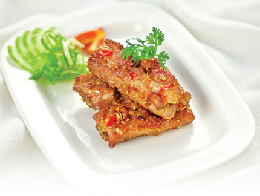

Sườn chiên xả ớt

- Khẩu phần 4
- Chuẩn bị 15 phút
- Thực hiện 15 phút
Nguyên liệu
- 400g sườn non
- ½ muỗng cà phê Hạt nêm từ Thịt Thăn, Xương
Ống & Tủy - Bổ sung Vitamin A (2.5g)
- 1 muỗng canh nước mắm (15ml ~ 16g)
- ¼ muỗng cà phê tiêu xay (0.5g)
- ¼ chén canh dầu ăn (50g)
- 7g tỏi bằm
- 50g sả bằm
- 5g ớt bằm
Hướng dẫn thực hiện
- Ướp sườn non với tỏi, sả bằm, ớt bằm, nước mắm, hạt nêm và tiêu.
- Cho dầu ăn vào chảo, để sôi tim và chiên sườn đến khi vàng đều là được.
- Dùng nóng với cơm.